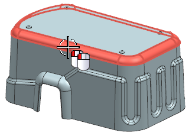
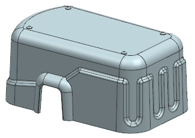
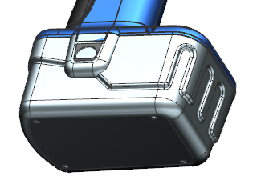

修改设计文件
-
将 wav3_pkg_battery_pack_case 设为显示部件。

-
双击如图所示的边倒圆。

-
将边倒圆的半径更改为8。

-
将 customer_pkg 设为显示部件。
对外部倒圆大小的修改将在 i_pkg 以及 customer_pkg 中进行更新。

注释
如果 WAVE 链接的体未发生更新，确保未打开工具→更新→部件间更新→延迟几何体、表达式和 PMI 选项。